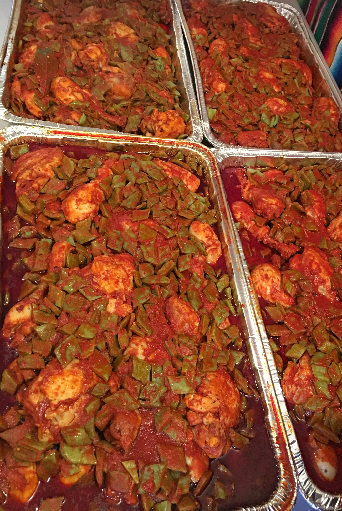
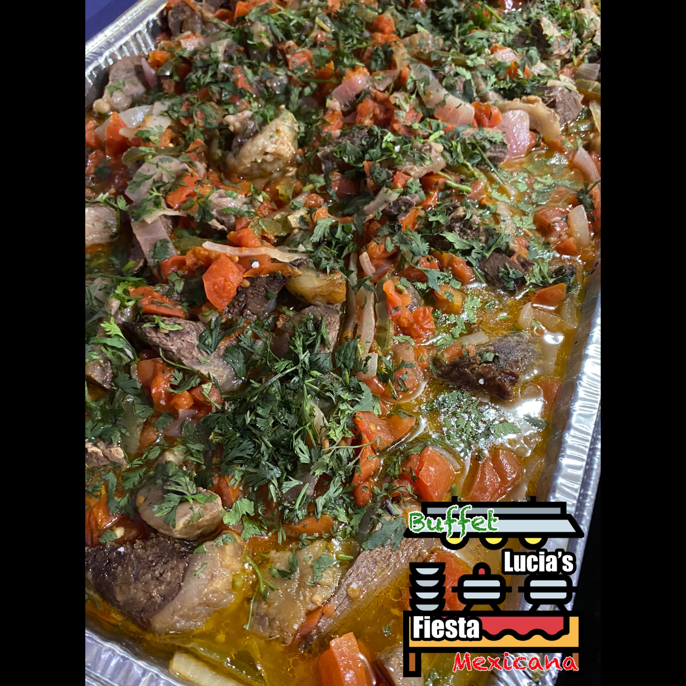
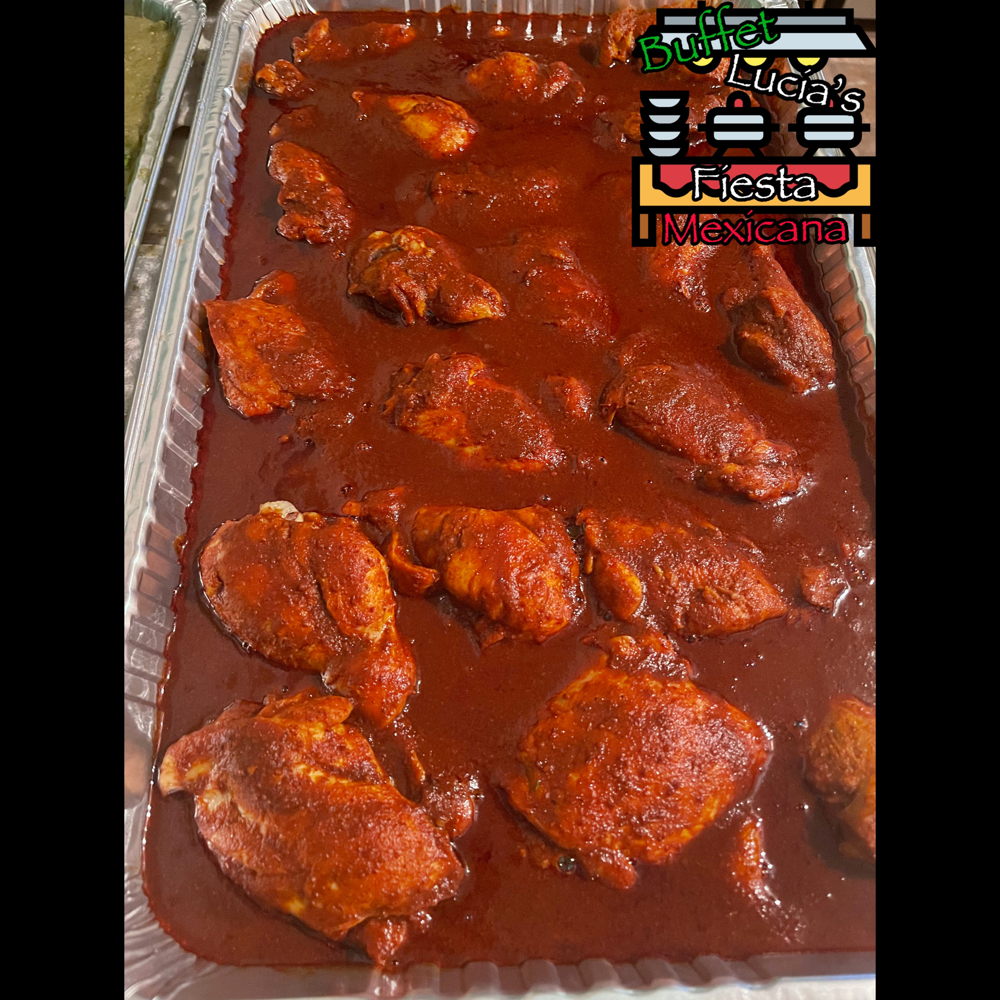

Catering Menu
Chivo (Goat)
Barbacoa de Chivo
Puerco (Pork)
Carnitas
Pernil
Pernil Enchilado
Costillas Frita
Costillas en Salsa Verde
Costillas Puerco en Salsa Verde
Costillas BBQ
Costillas en Salsa Roja
Adobo de Puerco
Guisado de Puerco
Pollo (Chicken)
Pollo Enchilado
Pollo Rostizado
Mixiotes de Pollo
Mixiotes de Pollo con Nopales

Mole Poblano de Pollo
Adobo de Pollo
Guisado de Pollo
Tinga de Pollo
Alas de BBQ
Pechuga Empanizada
Piernas de Pollo Empanizadas
Pollo a la Francesa
Res (Beef)
Mixiotes de Res
Bistec a la Mexicana

Bistec Encebollado
Adobo de Res

Mariscos (Seafood)
Camarones a la Diabla
Camarones Fritos
Antojitos
/ Vegetarianos
Chiles Rellenos
Chilaquiles
Flautas
(Queso, Pollo o Papas)
Ensaladas
Ensalada de Nopales
Ensalada Mixta
Ensalada de Frutas
Ensalada de Papas
Arroz, Frijoles
y Tortillas
Arroz Mexicano
Arroz Blanco
Arroz Blanco con Frijoles
Arroz con Gandules
Arroz con Vegetales
Frijoles
Tortillas hechas a Mano
Pastas
Espagueti a la Mexicana
Espagueti Estilo Marisol
Espagueti con Crema y Queso
Macarroni con Cheese
Pasta Penne Vodka
Lasagna
Favoritos para
Niños
Hot Dogs
Chicken Tenders
Especialidades de
la Casa
Mole Estilo Mi Rancho
Albóndigas de Gusto